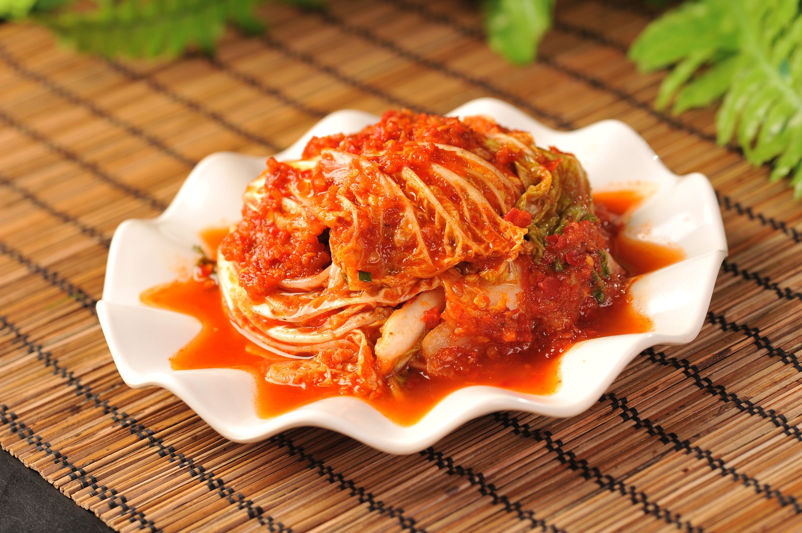

お品書き
焼きもの
焼鳥
炭火で時間をかけて焼き上げた、沖縄県産地鶏。
¥400
えいひれ
弱火でじっくり炙った、濃い味のヒレ。
¥400
焼鳥
炭火で時間をかけて焼き上げた、沖縄県産地鶏。
¥400
焼鳥
炭火で時間をかけて焼き上げた、沖縄県産地鶏。
¥400
焼鳥
炭火で時間をかけて焼き上げた、沖縄県産地鶏。
¥400
漬けもの

漬物
自家製のこだわり漬物。歯応えがありお酒がすすみます。
¥400

珍味
さっぱり味の島らっきょうを、温めてお出しします。
¥400
漬物
自家製のこだわり漬物。歯応えがありお酒がすすみます。
¥400
漬物
自家製のこだわり漬物。歯応えがありお酒がすすみます。
¥400
煮もの

鍋もの
朝から仕込み、濃い出汁が具によく染みて美味いです。
¥400
鍋もの
朝から仕込み、濃い出汁が具によく染みて美味いです。
¥400
鍋もの
朝から仕込み、濃い出汁が具によく染みて美味いです。
¥400
鍋もの
朝から仕込み、濃い出汁が具によく染みて美味いです。
¥400
さけ
泡盛
琉球泡盛を氷で割ります。独特な風味をお楽しみください。
¥400
焼酎
芋の香りが濃い最高の焼酎です。
¥400
ビール
沖縄名物のオリオンビールです。
¥400
冬の味覚〇〇〇〇を厳選し調達しました。この時期だけの特別な品々をぜひご堪能ください。
期間限定

新着情報
御予約
- 電話番号
- 098−123−4567
電話する - メール
- nonbee-info@gmail.com
メールする - 営業時間
- 夜6：00〜深夜12：00
- 定休日
- 日曜日・月曜日・年末年始
- 座席数
- 60席
- お支払い
- 現金・PayPay・Suica・クレジット（Visa/JCB/Master）